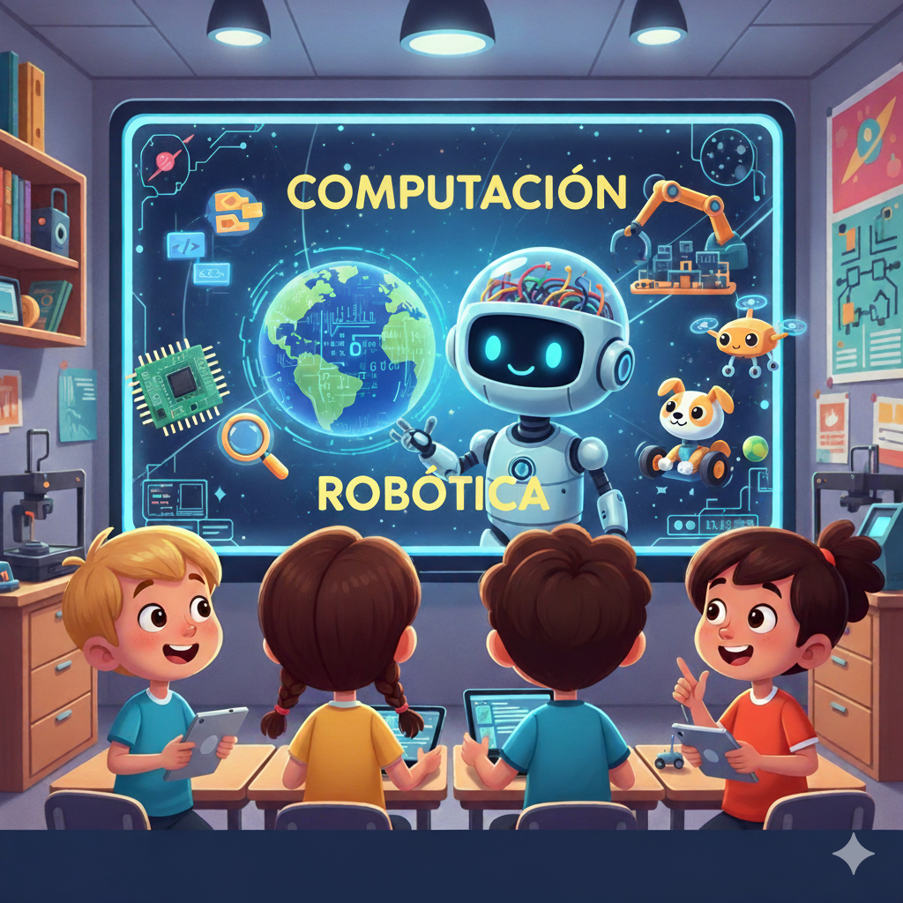

¿Qué es esta asignatura?
En este curso, no solo usarás tecnología, ¡la crearás! Exploraremos el fascinante mundo de la programación, desde la creación de videojuegos y aplicaciones móviles hasta el control de robots reales. Aprenderás a pensar como un ingeniero, a resolver problemas de forma creativa y a colaborar con tus compañeros en proyectos increíbles.
Desarrollarás habilidades que te servirán para toda la vida, no solo en tecnología, sino en cualquier desafío que te propongas. ¡El futuro está en tus manos y tú serás el encargado de construirlo!

Competencias que desarrollarás
1. Impacto Social y Pensamiento Computacional
Comprenderás el impacto de la tecnología en nuestra sociedad y desarrollarás tu capacidad de resolver problemas de forma lógica y creativa.
2. Creación de Programas
Aprenderás a crear programas y aplicaciones sencillas con lenguajes de bloques, trabajando en equipo para resolver desafíos.
3. Diseño de Sistemas Físicos y Robóticos
Serás capaz de diseñar y construir sistemas robóticos simples, aplicando tus conocimientos para crear soluciones automatizadas a problemas del mundo real.
4. Análisis de Datos e Inteligencia Artificial
Explorarás el mundo de los datos y la IA, entendiendo cómo nos ayudan a comprender y mejorar nuestro mundo.
5. Creación de Aplicaciones y Webs Seguras
Aprenderás a crear aplicaciones y páginas web sencillas, conociendo y aplicando los principios de seguridad y privacidad.
6. Principios de Ciberseguridad
Conocerás cómo protegerte en Internet, adoptando hábitos de seguridad activa y pasiva para navegar de forma segura y responsable.
Criterios de Evaluación
A lo largo del curso, serás evaluado/a en base a los siguientes criterios:
Criterios 1.x
- 1.1. Comprender el funcionamiento global de los sistemas de computación física, sus componentes y principales características.
- 1.2. Reconocer el papel de la robótica en nuestra sociedad, indicando el marco elemental de trabajo de los mismos.
- 1.3. Entender la estructura básica de un programa informático.
- 1.4. Comprender los principios básicos de ingeniería en los que se basan los robots.
Criterios 2.x
- 2.1. Conocer y resolver la variedad de problemas posibles, desarrollando un programa informático y generalizando las soluciones, tanto de forma individual como trabajando en equipo, colaborando y comunicándose de forma adecuada.
- 2.2. Entender el funcionamiento interno de las aplicaciones móviles y cómo se construyen, dando respuesta a las posibles demandas del escenario a resolver.
- 2.3. Conocer y resolver la variedad de problemas posibles desarrollando una aplicación móvil y generalizando las soluciones.
Criterios 3.x
- 3.1. Ser capaz de construir un sistema de computación o robótico, promoviendo la interacción con el mundo físico en el contexto de un problema del mundo real, de forma sostenible.
Criterios 4.x
- 4.1. Conocer la naturaleza de los distintos tipos de datos generados hoy en día, siendo capaces de analizarlos, visualizarlos y compararlos, empleando a su vez un espíritu crítico y científico.
- 4.2. Comprender los principios básicos de funcionamiento de los agentes inteligentes y de las técnicas de aprendizaje automático, con objeto de aplicarlos para la resolución de situaciones mediante la Inteligencia Artificial de forma ética y responsable.
Criterios 5.x
- 5.1 Conocer la construcción de aplicaciones informáticas y web, entendiendo su funcionamiento interno, de forma segura, responsable y respetuosa.
- 5.2. Conocer y resolver la variedad de problemas potencialmente presentes en el desarrollo de una aplicación web, tratando de generalizar posibles soluciones.
Criterios 6.x
- 6.1. Adoptar conductas y hábitos que permitan la protección del individuo en su interacción en la red.
- 6.2. Acceder a servicios de intercambio y publicación de información digital aplicando criterios básicos de seguridad y uso responsable.
- 6.3. Reconocer y comprender los derechos de los materiales alojados en la web.
- 6.4. Adoptar conductas de seguridad activa y pasiva en la protección de datos y en el intercambio de información.